Як зрозуміло показати розтермінування ПриватБанку разом із чинною пропозицією Банку Восток у checkout Сільпо. Бенчмарк на реальних мобільних і десктопних інтерфейсах українського e-commerce.
Мобайл + десктоп · Playwright 390×844 і 1440×900 · 2026-07-28 · дослідження для Сільпо
Головні висновки
Ринковий стандарт для «кількох банків в одному екрані».
Кілька банків = єдина модалка «Кредитні пропозиції» зі списком карток-радіо, де кожен банк — окрема картка. Це прибирає відчуття дублікатів.
Групування: усі банки зводять під один спільний вхід/заголовок («Оплата частинами» / «Кредитні пропозиції» / «В кредит») зі списком усередині — банки ніколи не розкидають окремими способами оплати. Регулярна оплата й розстрочка — паралельні гілки (MOYO: «Купити» vs «Оформити кредит»).
Кожен банк зберігає власну назву продукту: ПриватБанк — «Оплата частинами», Монобанк — «Купівля частинами», ПУМБ — «Сплачуйте частинами», А-Банк — «Плати частинами».
Кількість платежів — окремий дропдаун у кожній картці, не спільний перемикач.
Обов'язково в картці: лого + назва банку + назва продукту, щомісячний платіж, повна вартість.
Внизу — sticky-підсумок (обраний строк + щомісячно) і одна CTA.
MOYO додає верхній рівень — групування за вигодою («Без переплати» vs «Кредит, %»), що напряму вирішує «щоб не виглядали як дублікати».
Вигоду видно ще до checkout: конкуренти виводять щомісячний платіж «від X ₴/міс» вторинною кнопкою на картці товару (і банером/міткою), а не лише на кроці оплати.
Світовий контекст: за кордоном ритейлер зазвичай показує один агрегатор (Klarna, Kueski), який ховає вибір планів усередині, а не кілька банків поряд. Тому модель «кілька банків в одному UI» ближча до українського / LatAm мультибанку. Деталі — розділ «Світові патерни».
Allo — еталон списку кількох банків
Точка входу — кнопка «Кредит N ₴/міс» під ціною. Далі модалка зі списком банків.
Нижче — ПУМБ і А-Банк, кожен зі своєю назвою продукту
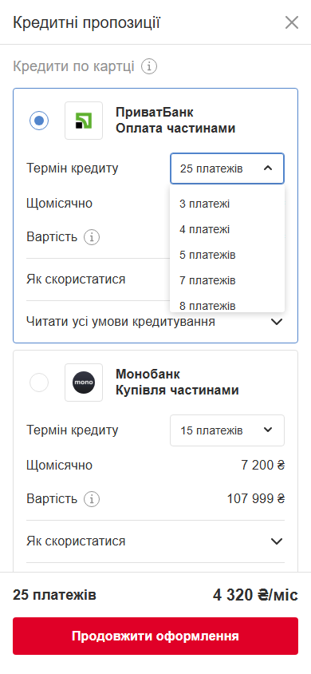
Кількість платежів, дропдаун у кожній картці (3/4/5/7/8…25)
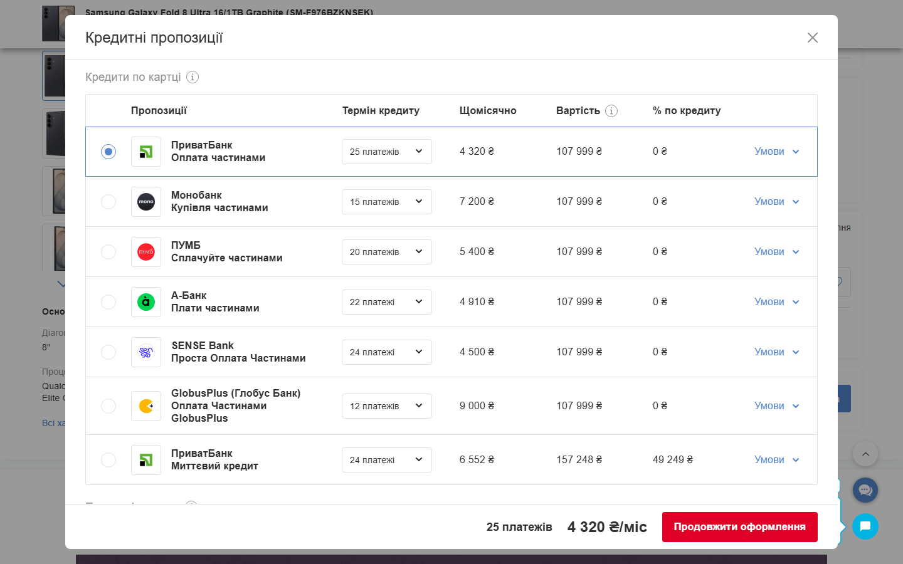
Десктоп: таблиця на 7 банків з колонкою «% по кредиту»
Банк
Назва продукту
Платежів
Щомісячно
ПриватБанк
Оплата частинами
25
4 320 ₴
Монобанк
Купівля частинами
15
7 200 ₴
ПУМБ
Сплачуйте частинами
20
5 400 ₴
А-Банк
Плати частинами
22
4 910 ₴
Що працює: один список → легко порівняти щомісячний платіж; сума видно ще до відкриття модалки; власна назва продукту прибирає плутанину «це те саме чи ні».
MOYO — групування за вигодою для клієнта
У кошику — блок «Кредитні пропозиції» з вкладками за типом вартості.
Вкладка «Кредит, %»: «Миттєва розстрочка», інша вартість
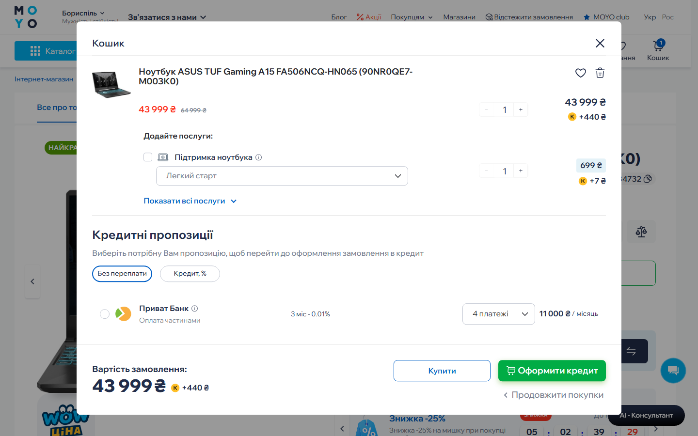
Десктоп: та сама модалка кошика, горизонтальний однорядковий layout
Що працює: поділ «Без переплати / Кредит, %» одразу показує різницю між пропозиціями — головний антидублікатний прийом. Звичайна оплата й розтермінування співіснують на одному екрані («Купити» vs «Оформити кредит»).
Ecodrive — прозорість переплати
Магазин електротранспорту (високий чек), промотує «Оплату частинами під 0%» на головній.
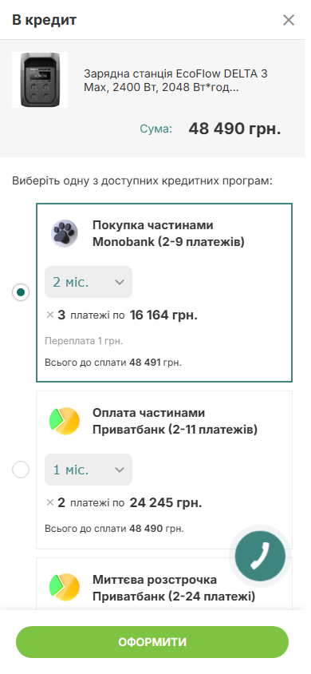
Мобайл: Monobank + ПриватБанк (2 продукти), явна «Переплата» і «Всього до сплати»
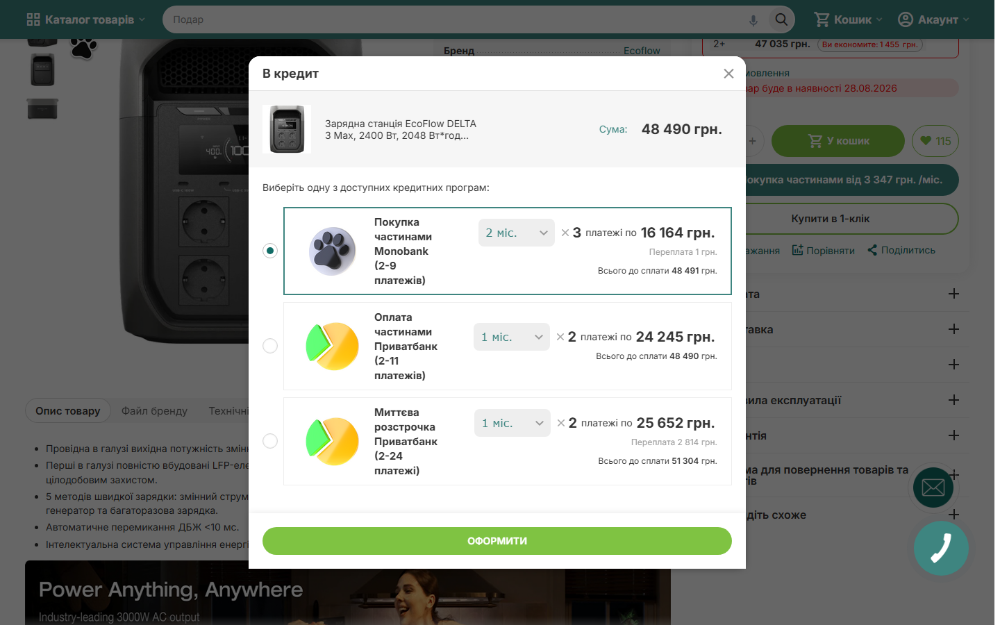
Десктоп: та сама модалка «В кредит» з радіо-списком банків
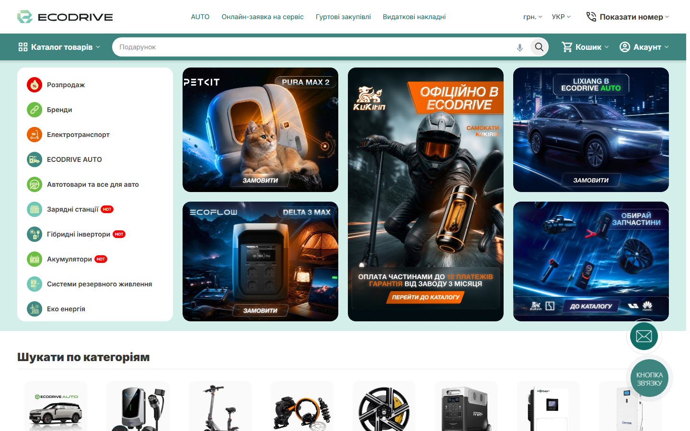
Промо «Оплата частинами під 0%» на головному банері
Банк
Програма
Діапазон
Приклад
Monobank
Покупка частинами
2–9 платежів
3 × 16 164 грн, переплата 1 грн
ПриватБанк
Оплата частинами
2–11 платежів
2 × 24 245 грн
ПриватБанк
Миттєва розстрочка
2–24 платежі
з переплатою
Що працює: рядки «Переплата X грн» і «Всього до сплати» знімають головне питання «скільки я переплачу». Один банк (ПриватБанк) присутній двома продуктами, які розрізняються назвою + переплатою. Прямий аналог задачі Сільпо.
Десктоп vs мобайл
Той самий контент, різна компоновка.
Мобайл
Вертикальні картки-радіо (Allo, Ecodrive) або горизонтальний ряд (MOYO).
Банк, дропдаун платежів, щомісячний платіж один під одним.
Sticky-футер із підсумком і однією CTA.
Десктоп
Allo: таблиця порівняння (Пропозиції · Термін · Щомісячно · Вартість · % по кредиту · Умови), 7 банків одразу.
Колонка «% по кредиту» відділяє 0%-розтермінування від кредиту з переплатою.
MOYO: та сама модалка кошика, горизонтальний однорядковий layout.
Для Сільпо: на десктопі є місце для табличного порівняння банків у колонках; на мобайлі, стек карток. Ознаку «переплата / 0%» варто показувати на обох платформах.
Точки дотику до checkout
Де користувач бачить вигоду раніше, ніж на кроці оплати.
Головне спостереження: у конкурентів «Оплата частинами» не живе лише в checkout. Вони показують її на кількох точках ще до оформлення, щоб щомісячний платіж було видно якомога раніше. Найважливіша з них — вторинна кнопка на картці товару, другорядна до «Купити», зі щомісячним платежем «від X ₴/міс» і логотипами банків.
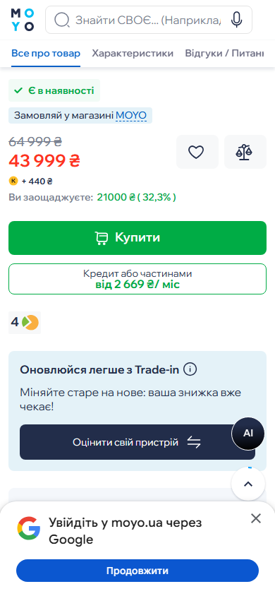
MOYO: вторинна кнопка «Кредит або частинами — від 2 669 ₴/міс» під «Купити»
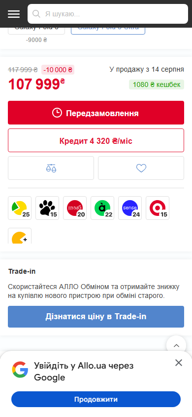
Allo: «Кредит 4 320 ₴/міс» + ряд лого банків з кількістю платежів
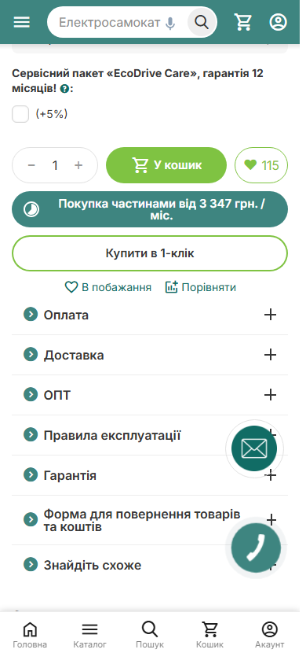
Ecodrive: «Покупка частинами від 3 347 грн/міс» біля «У кошик»
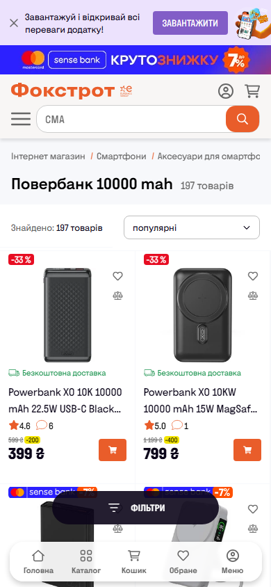
Foxtrot: мітка «Оплата частинами» на плитці + Sense у шапціEcodrive: банер «Оплата частинами під 0%» на головній
Точка дотику
Хто
Що показано
Головний банер
Ecodrive, Foxtrot
Обізнаність про послугу на вході
Плитка товару в каталозі
Foxtrot
Ранній сигнал доступності у списку
Картка товару (вторинна кнопка)
MOYO, Allo, Ecodrive
Щомісячний платіж біля «Купити», ще до checkout
Кошик
MOYO
Вибір програми перед оформленням
Checkout
усі
Спосіб оплати + вибір банку
Для Сільпо: показувати щомісячний платіж «від X ₴/міс» вторинною кнопкою на картці товару (другорядною до «Купити», з логотипами Приват + Восток), а не тільки на кроці оплати. За потреби, мітка в каталозі чи банер для обізнаності.
Світові патерни BNPL
Погляд за межі українського ринку: Klarna (EU/US), Zip (AU), Kueski (LatAm). Метод — desk research; умови орієнтовні, метрики наведено як заяви джерел.
Метод: міжнародні grocery-checkout закриті гео/логіном/антиботом (Carrefour, Woolworths, Affirm, Walmart — Cloudflare). Реально зняті лише лендінги провайдерів; решта — публічні UX-гайдлайни й огляди. Деталі та джерела — у INTERNATIONAL.md.
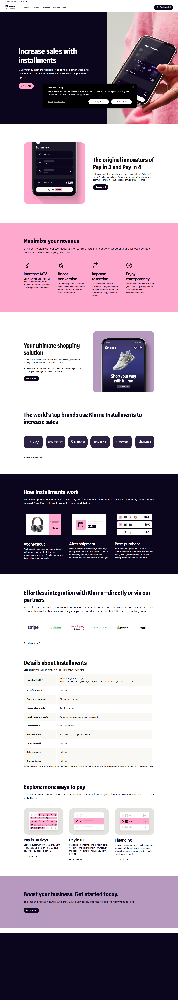
Klarna: «How installments work» (at checkout / after purchase / post-purchase) + плани Pay in 30 / Pay in 4 / Financing
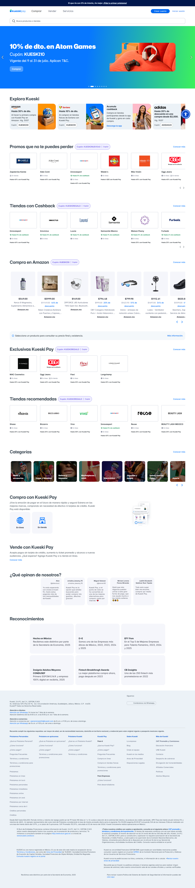
Kueski Pay (MX): «Pago en Quincenas», без картки й кредитної історії — фінансова інклюзія
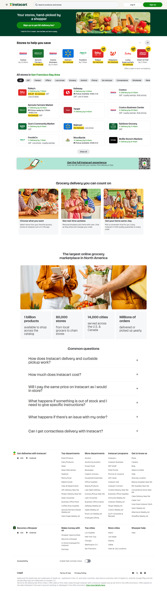
Instacart (US): grocery-маркетплейс із BNPL Klarna + PayPal Pay Later як окремими способами оплати
Кейс
Модель
Наскільки прямий аналог Приват+Восток
Carrefour + Klarna (FR)
1 агрегатор; вибір планів усередині Klarna
Частковий — вибір планів, не банків
Woolworths + Zip (AU)
Wallet: Zip Visa-картка / gift card, не inline
Слабкий — обхідна механіка
Instacart / Walmart (US)
Instacart: кілька провайдерів окремо; Walmart: ексклюзив (Affirm→Klarna)
Частковий; Instacart — радше анти-патерн
Rappi / Amazon MX + Kueski
Без картки й історії; біквіклі-платежі, аплікація в checkout
Найближчий за духом (LatAm мультиметод)
Що переноситься на Сільпо
Messaging під ціною до checkout — універсальний патерн («Pay in 4», «€20/mo»). Klarna заявляє +25% AOV. Підтверджує нашу секцію «Точки дотику».
Явний графік і локалізований ритм: EU — кожні 30 днів, US — кожні 2 тижні, LatAm — quincenas, UA-банки — місячні. Ритм показувати прямо.
Нативна інтеграція проти wallet-обхідних: Zip/Klarna-картка з copy-paste — гірший UX. Аргумент за вбудований вибір Приват+Восток у checkout Сільпо.
Без картки / низький бар'єр (Kueski) — резонує з UA; аплікація в потоці, не окремим кроком.
Pre-select обраного банку для повернених (Klarna).
Головний висновок: у світі норма — один агрегатор ховає вибір планів, а не ритейлер показує кілька банків. Тому кейс Сільпо ближчий до українського / LatAm мультибанку, ніж до Klarna-моделі. Захід дає корисні мікро-патерни, але шаблон «кілька банків в одному UI» краще брати з українського бенчмарку (Allo, MOYO, Ecodrive). Там, де провайдерів кілька і їх подають окремо (Instacart), виникає саме та плутанина-дублікат, якої ми уникаємо.
Зведення патернів
Питання
Що роблять конкуренти
Показ доступності
Щомісячний платіж на кнопці (Allo); мітка на плитці (Foxtrot); блок у кошику (MOYO)
Групування банків
Єдиний список карток-радіо (Allo); вкладки за типом вартості → банк (MOYO)
Пояснення умов
Згортки «Як скористатися / Читати умови» в картці (Allo); опис зверху (MOYO)
Вибір к-сті платежів
Окремий дропдаун у кожній картці банку
Лого / назва / платіж
Лого + назва банку + власна назва продукту + щомісячний + повна вартість
Організація в checkout
Розтермінування — один зі способів оплати; sticky-підсумок + одна CTA
Рекомендації для Сільпо
Поєднання ПриватБанк «Оплата частинами» + Банк Восток.
Один блок «Оплата частинами», а не два способи оплати. Всередині — вибір банку. Інакше два майже однакові рядки = відчуття дублікатів.
Кожен банк — окрема картка-радіо зі своїм лого й назвою (Восток і Приват візуально різні).
Зберігати власну назву продукту банку — не уніфікувати в безлике «розтермінування».
Кількість платежів — дропдаун у кожній картці, з миттєвим перерахунком «щомісячно».
Щомісячний платіж — якомога раніше: на рівні способу оплати «від X ₴/міс».
Якщо умови банків різні за вартістю — додати верхній рівень «Без переплати / З переплатою» (патерн MOYO). Якщо обидва без переплати — простий список.
Анти-патерни: два окремі пункти «Розтермінування Восток» і «Розтермінування Приват» на одному рівні зі звичайною оплатою; однакові іконки/назви; спільний перемикач платежів на два банки з різними лімітами; прихований щомісячний платіж.
Happy path
Від вибору способу оплати до успішного замовлення (Приват разом із Восток).
Крок оплати. У списку способів — «Оплата частинами» з підписом «від N ₴/міс, 2 банки».
Розкривається вибір банку (акордеон / bottom-sheet): картка ПриватБанк «Оплата частинами» + картка Банк Восток «Оплата частинами». Опційно — вкладки «Без переплати / З переплатою».
Користувач обирає ПриватБанк — картка підсвічується, радіо залите.
Обирає кількість платежів у дропдауні → «Щомісячно» миттєво перераховується.